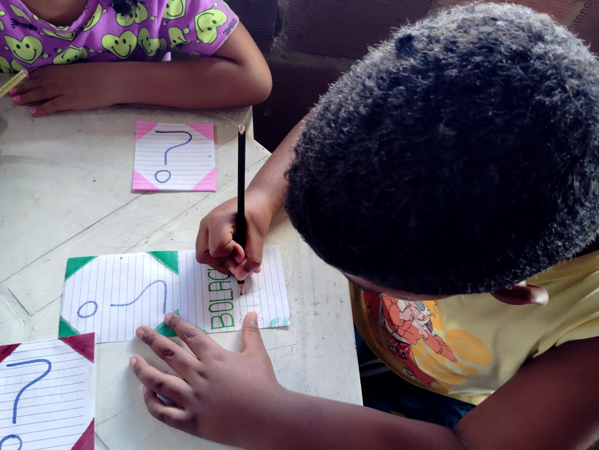
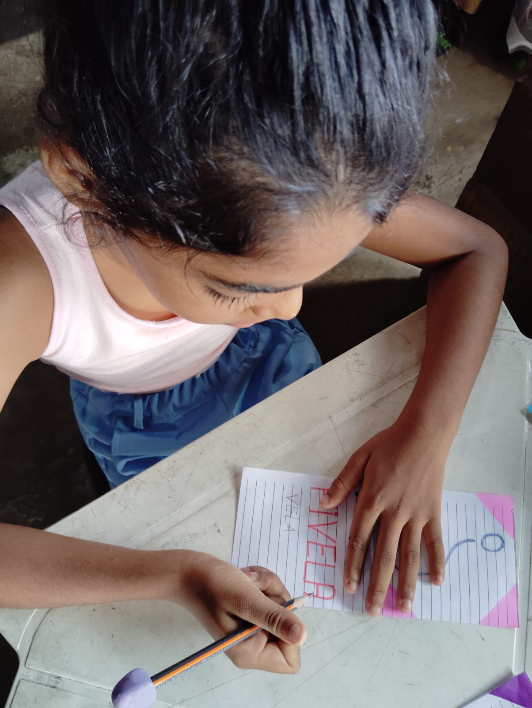
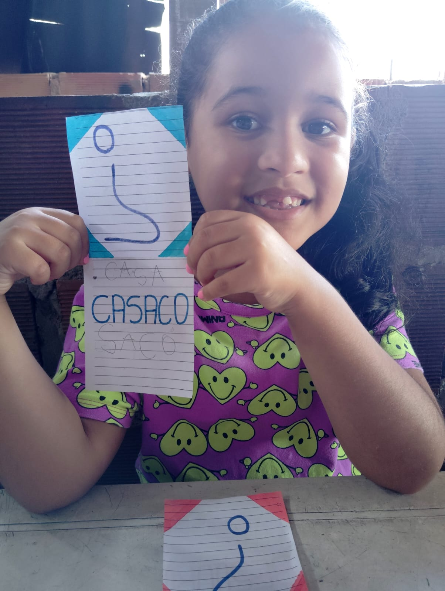
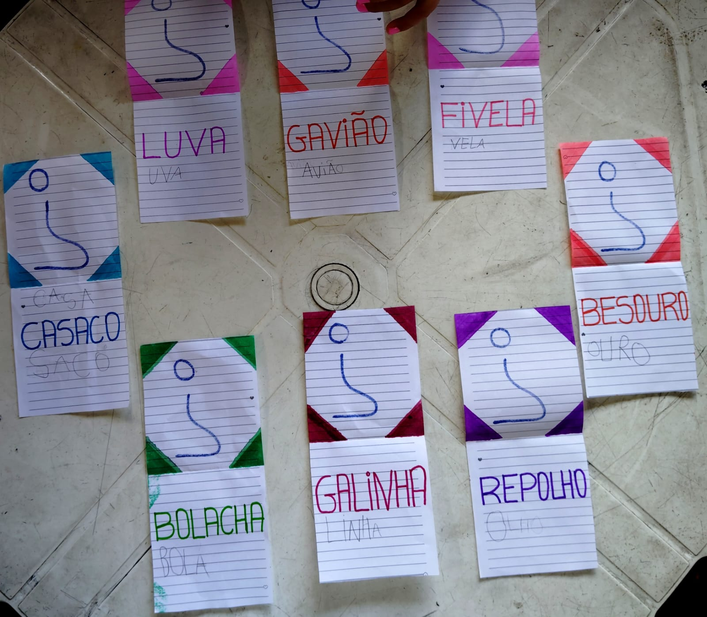
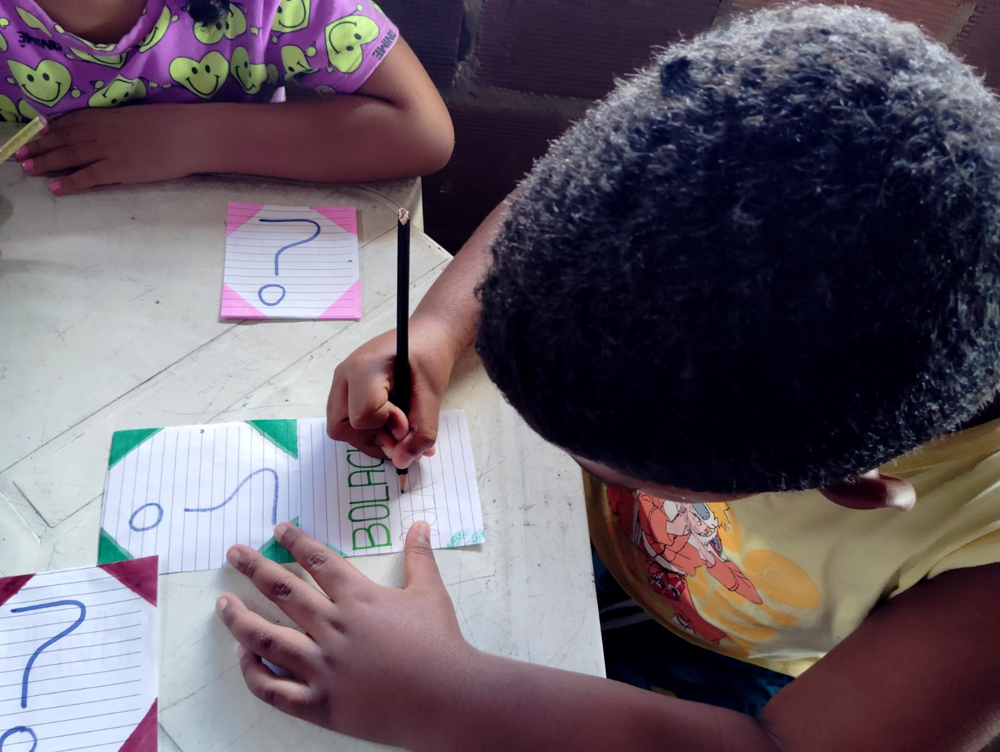
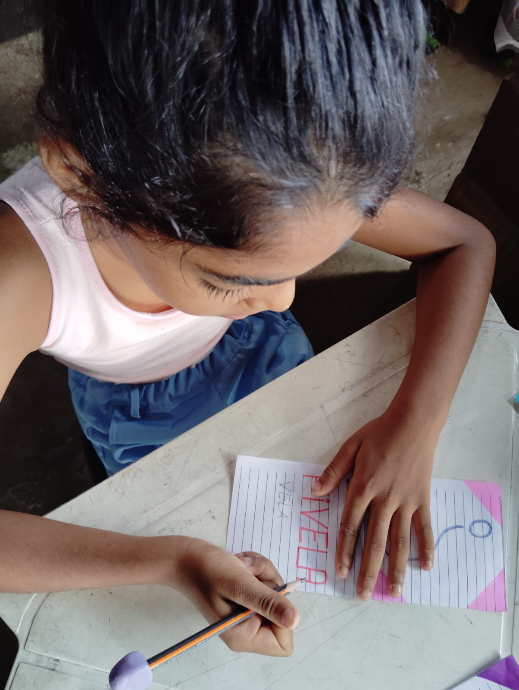
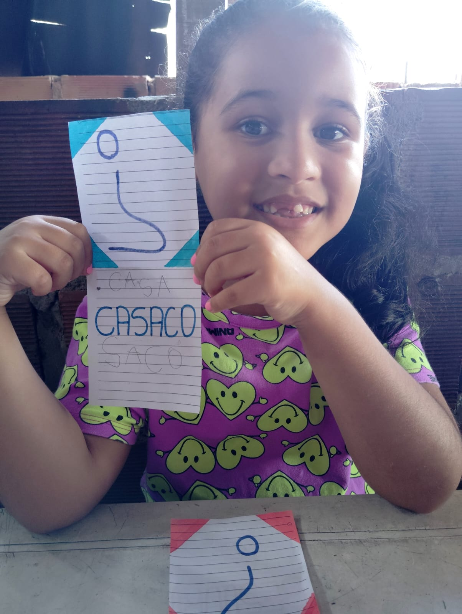
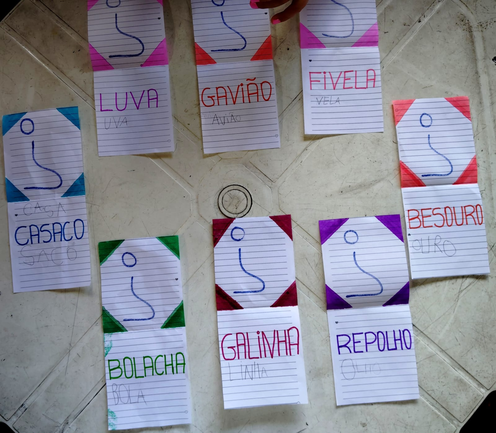

Desenvolvimento da Atividade: A atividade será realizada de forma individual e sequencial, ou seja, uma criança por vez participa.
- A criança escolhe uma das fichas com o ponto de interrogação.
- Em seguida, ela abre a ficha e realiza a leitura da palavra escrita no interior.
- Proponho um questionamento desafiador: “Será que conseguimos formar outra palavra dentro da mesma palavra?”
- A criança deve refletir e tentar formar uma nova palavra, que será escrita no espaço interno da mesma ficha, abaixo da palavra original.
- O processo se repete com as demais crianças, respeitando o tempo de cada uma, promovendo a participação ativa e a valorização do pensamento individual.
Objetivos da Atividade:
- Desenvolver a leitura e a consciência fonológica;
- Estimular a criatividade e o raciocínio linguístico;
- Trabalhar com a formação de palavras e a percepção da estrutura das mesmas;
- Promover a oralidade e a troca de conhecimentos entre os colegas;
- Incentivar a autonomia e o protagonismo infantil.
Essa atividade lúdica é uma forma criativa e interativa de promover a aprendizagem da língua escrita, permitindo que as crianças se envolvam ativamente no processo de construção do conhecimento, ao mesmo tempo em que se divertem. Além disso, valoriza o pensamento crítico e a observação de possibilidades linguísticas, aspectos essenciais no processo de alfabetização.
 






